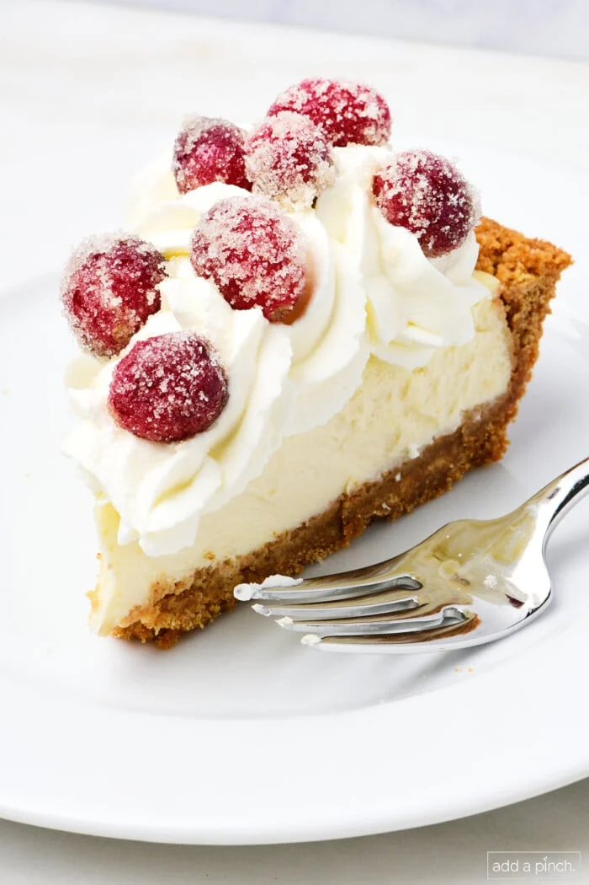

Cheesecake

This cheesecake pie recipe delivers creamy cheesecake flavor in a simple graham cracker crust. Perfect for beginners, it’s a quick homemade cheesecake alternative ready in under an hour of baking. Top with berries, caramel, or whipped cream. Total time 45 minutes. This recipe serves 8. Have fun baking!!
Equipment
- Pie plate
- Mixing bowl
- A mixer
Ingredients
- 1 (9-inch) Graham Cracker Crust
- 16 ounces cream cheese, softened
- 2/3 cup sugar
- 2 large eggs, room temperature
- 1 teaspoon vanilla extract
- 1/4 cup sour cream, room temperature
Ingredients for Graham Cracker Crust
- 2 cups graham cracker crumbs, about 14 full sheets of graham cracker
- 2 tablespoons granulated sugar
- 6 tablespoons salted butter, melted
Instructions
- Add the graham cracker crumbs and the sugar to a medium bowl. Stir well to combine. Pour in the melted butter and stir into the graham cracker crumb mixture until well combined.
- Pour the graham cracker mixture into a pie plate and press firmly into the bottom and up the sides of the pie plate.
- Once the graham cracker mixture has been pressed into the pie plate, place in the refrigerator to chill until firm, about 1 hour.
- Make the cheesecake filling. Add the softened cream cheese, sugar, eggs, vanilla extract, and sour cream to a large mixing bowl. Use a hand mixer (or stand mixer) on low speed and combine the ingredients until smooth and creamy. You do not want a fluffy, air-filled batter. Pour the cheesecake filling into the baked graham cracker crust.
- Bake the pie. Bake the cheesecake pie for 25 to 30 minutes until the center of the pie is almost set. Allow it to cool on a wire rack for 1 hour. Refrigerate at least 5 hours to overnight before slicing and serving.
Back to Desserts